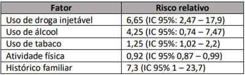
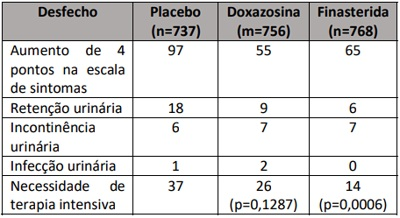
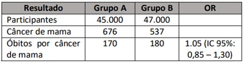
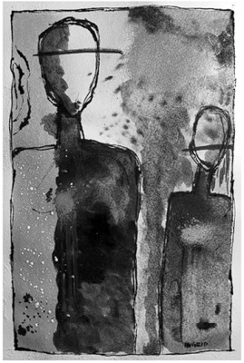
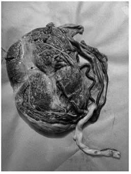
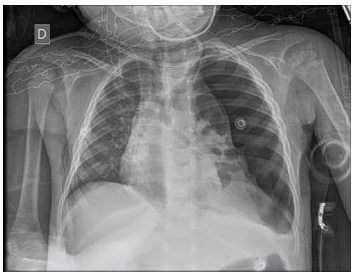
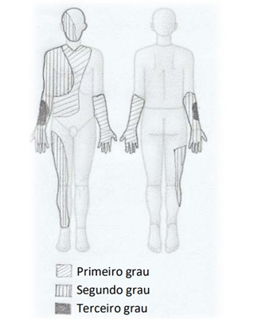

Questão 1 · Método SOAP · 4000166221Acerca do registro em saúde orientado por problemas (ReSOAP) e do registro médico tradicional (RMT), também conhecido como história clínica hospitalar, assinale a alternativa correta.
A No registro tradicional, há maior facilidade na busca de informações, por estar estruturado em tópicos, como, por exemplo: queixas; história pregressa da doença atual; interrogatório sobre diversos sistemas; antecedentes; hipóteses diagnósticas; e conduta.
B O registro tradicional permite pensar em um número maior de possibilidades diagnósticas, uma vez que podem ser colocadas hipóteses interrogadas. Porém, no ReSOAP, não é recomendado que se coloque hipóteses interrogadas no item avaliação, privilegiando, com isso, a descrição de diagnósticos nosológicos.
C Nos dois tipos de registro, é importante estar atento à coleta adequada de informações, fugindo-se dos extremos. Coletar muitos dados sem filtrar aquilo que é necessário para o raciocínio pode facilitar a perda de informação, enquanto coletar poucos dados pode dificultar a tomada de decisão, pela falta de informações necessárias para a conduta.
D Apesar de algumas diferenças em relação aos métodos de registro, o ReSOAP também apresenta dificuldade para prestar cuidado preventivo, pois tem foco no diagnóstico e nos objetivos imediatos da consulta, sem considerar dados sociodemográficos ou características pessoais.
E O ReSOAP é utilizado, principalmente, na atenção primária à saúde, sendo seu uso inadequado em outros níveis de atenção.
Questão 2 · Rede de Atenção Psicossocial RAPS · Política Nacional de Atenção Básica PNAB · 4000166220A respeito da saúde mental na atenção primária à saúde, assinale a alternativa incorreta.
A O matriciamento pode ser definido como um modo de se produzir saúde, consistindo em um arranjo organizacional que visa a outorgar suporte técnico-pedagógico, em áreas específicas, às equipes da atenção primária à saúde.
B O matriciamento se afirma como um recurso de construção de novas práticas em saúde mental junto às comunidades, no território onde as pessoas vivem e circulam, por sua proposta de encontros produtivos, sistemáticos e interativos entre as equipes da atenção primária e as equipes de saúde mental.
C As maiores dificuldades na efetivação da prática do matriciamento são: mudanças nas relações de trabalho, historicamente hierarquizadas; mudança no modo fragmentado de se operar o cuidado em saúde; mudança na formação em saúde, centrada na perspectiva biomédica; e mudança no modo de se praticar saúde, que transcende o setor da saúde.
D O psiquiatra, como principal elo do matriciamento em saúde mental, tem como função atender os casos de doenças psiquiátricas que gerarem dúvidas ou desconforto na equipe matriciada.
E É parte do objetivo do matriciamento a descentralização da atenção em saúde mental e a desestigmatização do sofrimento psíquico.
Questão 3 · Atenção Primária à Saúde APS no Brasil · 4000166219Durante uma consulta de pré-natal, o médico de família da UBS observou uma alteração ultrassonográ ca que poderia estar relacionada ao tabagismo e decidiu encaminhar a paciente para o alto risco. Contudo, além do encaminhamento, o médico poderia, se disponível, realizar o matriciamento com o obstetra. Com base nesse caso hipotético, assinale a alternativa correta.
A O acesso ao especialista focal se dá por meio de centrais de regulação e protocolos de acesso. Após a avaliação da lista de espera, o serviço especializado determinará se a paciente passará ou não em consulta.
B O cuidado integral e colaborativo entre especialistas focais e equipe estará sob a coordenação do cuidado pela atenção primária à saúde, sem transferência de responsabilidade.
C O matriciamento apoiador deve fazer atendimentos individuais com a paciente, sem se envolver em atividades de grupos, discussão de caso e espaço de educação permanente.
D Profissionais do Núcleo Ampliado de Saúde da Família (NASF) não são exemplos de apoiadores matriciais, já que realizam, além de atendimentos individuais, atendimentos coletivos e de educação continuada.
E O obstetra não pode fazer parte do Núcleo Ampliado de Saúde da Família (NASF).
Revisar: possível letra faltando em enunciado
Questão 4 · Luto · 4000166218No que se refere à abordagem de pessoas e familiares em luto na atenção primária à saúde, assinale a alternativa correta.
A A duração do processo de luto é bastante variável, não sendo recomendada a utilização de critério temporal rígido para a definição de luto complicado ou patológico.
B Perdas inesperadas por mortes súbitas e prematuras costumam estar associadas à maior capacidade de assimilação da perda, devido à experiência traumática.
C Crianças menores de seis anos de idade não devem ser expostas a informações sobre a finitude da vida, pois isso causa grande ansiedade, medo e apego excessivo aos seus cuidadores.
D Ainda que a perda de alguns pacientes seja profundamente dolorosa para os profissionais, estes não devem comparecer a rituais de despedidas, como, por exemplo, o velório.
E Independentemente do sofrimento gerado pela perda, o uso de medicação deve ser evitado nas primeiras quatro semanas.
Questão 5 · valor p e intervalo de conf iança · Risco Relativo RR Razão de Riscos · 4000166217Um estudo de coorte foi realizado para definir os principais fatores de risco de uma doença comum. A seguinte tabela de resultado foi encontrada. Assinale a alternativa que apresenta a interpretação correta dos dados desse estudo.

A O principal fator de risco envolvido no desenvolvimento da doença é o histórico familiar.
B Esse estudo não demonstrou correlação do álcool com a doença. Entretanto, não descarta que o uso de álcool e de drogas injetáveis possa ter efeitos similares.
C Esse estudo permite fazer interferência estatística para toda a população.
D A atividade física apresentou redução de 92% da incidência da doença.
E Não é possível concluir sobre a relação dos fatores com a doença, pois não foi disponibilizado o valor do P.
Questão 6 · NNT · Risco Relativo RR Razão de Riscos · Risco Absoluto · 4000166216A tabela a seguir expressa os números de eventos dos desfechos avaliados com quatro anos de seguimento nos grupos placebo, doxazosina e finasterida. Com base nesse caso hipotético, assinale a alternativa correta.

A Se os sintomas do paciente não causarem piora da qualidade de vida, pode-se propor uma conduta expectante, uma vez que 86,9% dos homens não têm progressão significativa dos sintomas clínicos ao longo de quatro anos.
B Homens tratados com doxazosina ou finasterida tiveram um risco absoluto menor de desenvolverincontinência urinária em quatro anos que aqueles que não receberam tratamento farmacológico.
C O uso de doxazosina reduziu, de forma estatisticamente significativa, o risco absoluto de necessidade de terapia intensiva, se comparado ao placebo, com número necessário para tratar 62 homens em quatro anos.
D O uso de doxazosina reduziu mais significativamente o risco absoluto de progressão dos sintomas que o uso de finasterida, com o número necessário para tratar dez homens em quatro anos.
E Não é possível calcular o número necessário para tratar dos desfechos expostos com os dados disponíveis.
Questão 7 · Sigilo prof issional em crianças e adolescentes Parecer CFM n 25 de 2013 · Sigilo prof issional · 4000166215Durante uma visita domiciliar realizada pela enfermagem, notou-se, na casa, a presença de uma adolescente de dezesseis anos de idade, que se mostrava retraída. Após uma conversa reservada, a jovem revelou que deixou de frequentar a escola há um mês e que estava preocupada com o atraso menstrual de dois meses. Com base nesse caso hipotético, assinale a alternativa que apresenta a melhor estratégia a ser utilizada.
A pedir exame de rotina pré-natal, encaminhando a paciente o quanto antes para o pré-natal de alto risco
B iniciar diálogo assertivo sobre a gravidez, entre os jovens e os pais, para fortalecer o acolhimento
C acionar imediatamente o conselho tutelar pelo abandono intelectual
D encaminhar ao serviço de acolhimento da UBS, pelo alto risco de abortamento clandestino
E encaminhar à UBS para teste de gravidez e combinar com ela o melhor momento para contar o fato aos pais
Questão 8 · Estudos Experimentais · 4000166214O diagnóstico precoce é considerado como um dos principais fatores para o sucesso no tratamento do câncer. No sentido de avaliar o impacto da triagem populacional com mamogra a, foi realizado um estudo no qual os participantes foram alocados em dois grupos: grupo A, submetido a mamogra as anuais por dez anos; e grupo B, que não realizou o exame periodicamente. A tabela a seguir resume alguns dos resultados do estudo. Com base nesse caso hipotético, assinale a alternativa que apresenta o tipo de estudo descrito e a interpretação adequada dos resultados.

A Utilizou-se um estudo de caso-controle e os dados são insuficientes para avaliar a eficácia da mamografia.
B Utilizou-se um estudo de coorte e os dados são insuficientes para avaliar a eficácia da mamografia.
C Utilizou-se um estudo de coorte e a mamografia não teve efeito na redução da mortalidade por câncer de mama.
D Utilizou-se um ensaio clínico e a mamografia não teve efeito na redução da mortalidade por câncer de mama.
E Utilizou-se um ensaio clínico e a mamografia foi eficaz porque aumentou o número de diagnósticos de câncer de mama.
Questão 9 · Sistema de Inf ormação de Agravos de Notif icação SINAN · 4000166213A noti cação compulsória de doenças e agravos alerta sobre a ocorrência de ameaças à saúde que precisam ser detectadas e controladas ainda em seus estágios iniciais. No momento da noti cação, alguns aspectos primordiais devem ser considerados, tais como:
A a notificação compulsória negativa deve ser realizada pelo responsável pelo estabelecimento de saúde à autoridade de saúde, informando que, na semana epidemiológica, não foi identificada nenhuma doença nem nenhum agravo ou evento de saúde pública constante da Lista de Notificação Compulsória.
B os médicos e os enfermeiros são obrigados a notificar doença, agravo ou evento de saúde pública constante da Lista de Notificação Compulsória, porém essa notificação é facultativa aos demais profissionais de saúde e aos responsáveis pelos serviços públicos e privados de saúde, que prestam cuidados e assistência ao paciente.
C a notificação compulsória imediata deve ser realizada pelo profissional de saúde ou pelo responsável pelo serviço assistencial que prestar o primeiro atendimento ao paciente, em até 48 horas desse atendimento, pelo meio mais rápido disponível.
D o paciente deve ser questionado quanto ao atendimento e(ou) à notificação em outro serviço público ou privado de saúde, a fim de se evitar a duplicidade de notificação e os problemas no planejamento das atividades da vigilância epidemiológica relacionadas ao agravo ou às doença notificadas.
E todo agravo de notificação compulsória deve ser reportado diretamente ao Ministério da Saúde, respeitando-se a periodicidade da notificação.
Questão 10 · Atenção Primária à Saúde APS no Brasil · 4000166212Os problemas de saúde não se distribuem uniformemente na população, no território e no tempo e envolvem tecnologias de diferentes complexidades e custos. Trata-se do conjunto
A interdisciplinar de equipes, que operam de modo ordenado e articulado no território, a fim de atender às necessidades de saúde de uma população.
B multiprofissional de equipes, que operam de modo ordenado e articulado no território, a fim de atender às necessidades de saúde de uma população.
C multi e interdisciplinar de equipes, que operam de modo ordenado e articulado no território, a fim de atender às necessidades de saúde de uma população.
D multi e interprofissional de equipes, que operam de modo ordenado e articulado no território, a fim de atender às necessidades de saúde de uma população.
E que estabelece diferentes funções e perfis de atendimento, que operam de modo ordenado e articulado no território, a fim de atender às necessidades de saúde de uma população.
Questão 11 · Política Nacional de Atenção Básica PNAB · 4000166211O trabalho em equipe é fundamental para que a atenção primária seja resolutiva e atenda as demandas dos pacientes e da população. Considerando a Política Nacional de Atenção Básica (PNAB) de 2017 e a alteração provocada pela Lei nº 14.231/2021, assinale a alternativa correta.
A A equipe mínima é composta por médico de família, enfermeiro, auxiliar ou técnico de enfermagem e agente comunitário de saúde, sendo que, na ausência de um desses profissionais, a equipe não será considerada como completa.
B A estratégia da Saúde da Família inclui fisioterapeuta e terapeuta ocupacional.
C O profissional de saúde bucal, o cirurgião-dentista ou o especialista em Saúde da Família não pode fazer parte diretamente da equipe de Saúde da Família (eSF).
D É obrigatória a presença do agente comunitário de saúde (ACS) para que a equipe seja considerada como equipe de eSF.
E O Núcleo Ampliado de Saúde da Família e Atenção Básica (Nasf-AB) compõe os serviços da Atenção Primária à Saúde (APS) e, quando presente, é de livre acesso à população do território.
Questão 12 · Ferramentas de abordagem f amiliar · 4000166210Uma paciente de trinta anos de idade, que está no sétimo dia de puerpério, compareceu à consulta com o seu médico, onde ocorreu o seguinte diálogo. Médico – Mas me fala, no mais como estão as coisas contigo? Paciente – Não está nada bem, a minha vontade é car na cama o dia inteiro. Estou muito cansada e, quando o bebê chora, fico muito irritada. Depois eu me sinto culpada. A minha vontade é de dormir o dia inteiro e não ver ninguém. Médico – E você já era assim antes? Paciente – Não, é que o bebê chora muito! Por exemplo, agora eu o deixei com a minha mãe para poder vir consultar, ou não iria conseguir. Eu acho que ele não gosta de mim, doutor! Médico – E como estão as coisas com o pai do bebê? Paciente – Aquele traste? Não vale nada… já disse para ele que eu não quero mais saber dele. Está muito pesado, tudo em cima de mim, doutor… Em relação ao diálogo transcrito e aos recursos de abordagem familiar que o médico poderia utilizar nesse caso hipotético, assinale a alternativa correta.
A ciclo de vida familiar, com abordagem das tarefas na fase defininho vazio
B ecomapa, com representação, com círculos e flechas, dos sistemas envolvidos na rede de apoio da paciente
C entrevista familiar, com convocação do marido e da avó para abordagem familiar
D genograma, com inserção de duas linhas contínuas ligando a paciente ao marido
E genograma, com inserção de duas linhas pontilhadas ligando a paciente ao marido
Questão 13 · Monitorização pós tratamento · Tratamento · 4000166209Magda, de trinta anos de idade, foi a uma unidade básica de saúde para consulta com o médico. Está no sétimo dia do puerpério e, como teve sí lis no último trimestre da gestação, trouxe o resultado do VDRL do terceiro mês pós-tratamento com penicilina benzatina, mostrado a seguir. VDRL 1:32 (primeiro mês) VDRL 1:16 (segundo mês) VDRL 1:16 (terceiro mês) Com base nesse caso hipotético, assinale a alternativa que apresenta a melhor conduta para a consulta.
A solicitar novo VDRL, notificar como reinfecção e prescrever penicilina benzatina
B solicitar novo VDRL, não notificar e considerar que o seguimento está adequado
C solicitar novo VDRL, notificar como falha terapêutica e prescrever doxiciclina
D solicitar novo VDRL, notificar como falha terapêutica e prescrever penicilina benzatina
E não solicitar novo VDRL, não notificar e considerar cicatriz sorológica
Questão 14 · Política Nacional de Atenção Básica PNAB · 4000166208Jéssica, de 23 anos de idade, foi ao pronto-socorro com medo de estar com um tumor cerebral. Há cerca de seis horas, abriu quadro de cefaleia unilateral e pulsátil. A dor era intensa, limitava os seus afazeres e acompanhava náusea, fotofobia e fonofobia. O que mais a preocupava era que esse quadro tinha começado há três meses e já tinha ocorrido pelo menos cinco vezes. Após descartar cefaleias secundárias, o médico a tranquilizou, a medicou para enxaqueca e a orientou a procurar uma unidade básica de saúde para avaliar as possíveis causas desencadeantes e a necessidade de pro laxia. Após duas semanas, Jéssica teve uma nova crise, semelhante às anteriores, e foi até a unidade básica de saúde da sua região procurar ajuda. Chegando à unidade, descobriu que a agenda do médico Marcos estava cheia e que não poderia marcar uma consulta para aquele dia. Como alternativa, sugeriram-lhe que passasse no acolhimento com a enfermeira Mariana. Após a conversa inicial, a enfermeira conversou com o médico Marcos e conseguiu um atendimento de encaixe para a paciente. Ela foi medicada para enxaqueca e orientada sobre a indicação da pro laxia, recebeu uma prescrição para os exames pertinentes e teve um retorno agendado. Com base nesse caso hipotético, assinale a alternativa que mais bem descreve a unidade básica de saúde tendo em vista a breve jornada da paciente e os atendimentos médios sem consulta agendada.
A Equipara-se ao atendimento do pronto-socorro, com resposta rápida à demanda de forma pontual.
B Diferencia-se do pronto-socorro, pois fortalece a qualidade da atenção, devido à integralidade.
C Demonstra abertura da agenda para demanda espontânea, resultando em inadequada gestão da clínica, sem controle do tempo das consultas ofertadas.
D Diferencia-se do pronto-socorro, pois fortalece a qualidade da atenção, devido à medicina centrada na pessoa.
E Diferencia-se do pronto-socorro, pois fortalece a qualidade da atenção, devido ao vínculo e à longitudinalidade.
Questão 15 · Ética Médica · Código de Ética Médica CEM · Documentos médicos · 4000166207Pedro, de 36 anos de idade, faz seguimento na unidade básica de saúde há cerca de seis meses e está em tratamento para depressão maior com uoxetina 60 mg, em remissão há cerca de dois meses. Ele não possui outras comorbidades e, apesar de não ter uma consulta agendada, veio solicitar o prontuário para levar para a nova unidade de referência. Com base nesse caso hipotético, assinale a alternativa que apresenta a conduta mais adequada.
A orientar que o prontuário é um documento do estabelecimento de saúde e que só pode fazer um relatório sobre os principais dados ali contidos
B orientar que pode solicitar, na administração, a transferência do prontuário original para a nova unidade de referência
C orientar que não pode deixar que o prontuário seja retirado do estabelecimento, mas que irá providenciar uma cópia
D orientar que não pode fornecer cópia ou relatório do prontuário, pois Pedro é um paciente da saúde mental
E orientar que a cópia do prontuário ou do relatório apenas poderá ser fornecida após o pedido do médico do outro serviço
Questão 16 · Amostragem · 4000166206Na obra localizadas de forma fácil e, frequentemente, não são retratadas pelos censos de forma dedigna. Vários grupos populacionais que são especialmente vulneráveis para condições de saúde encontram-se na condição descrita acima e são chamados de populações de difícil acesso. Considerando os meios desenvolvidos para selecionar ou amostrar esses indivíduos em um estudo, assinale a alternativa correta em relação a essas populações.

A Uma das maneiras é o RDS (
B Uma das maneiras é o RDS, que só é utilizado em países subdesenvolvidos que não dispõem de censos confiáveis.
C O RDS, por não requerer incentivo primário e secundário, é preferível ao TLS (
D Uma pesquisa formativa não é necessária para a fase de inquérito do TLS.
E A amostra de conveniência de ambulatórios específicos é a melhor forma de amostrar situações raras e de difícil acesso.
Questão 17 · Estudos Epidemiológicos · 4000166205Um grupo de alunos gostaria de realizar dois estudos para avaliar se algum fator de vulnerabilidade social aumenta o risco de complicação para covid-19 e a incidência da síndrome de Kallmann. Com base nesse caso hipotético, assinale a alternativa que apresenta o melhor desenho de estudo para cada situação.
A caso-controle para ambos
B coorte para ambos
C coorte para covid-19 e caso-controle para síndrome de Kallmann
D transversal para covid-19 e coorte para síndrome de Kallmann
E ensaio clínico para covid-19 e transversal para síndrome de Kallmann
Questão 18 · Atributos gerais da Atenção Primária à Saúde APS · 4000166204Marcela, de 64 anos de idade, não costuma ir com frequência à unidade básica de saúde, pois sua mãe, de 86 anos de idade, é uma das moradoras mais antigas da região e faz o tratamento dela, dos lhos e de parte da comunidade com chás e plantas medicinais. A paciente não acredita que a “medicina moderna” tenha tanto efeito quanto a “medicina da natureza”, mas gostaria de realizar exames para ver como está a sua saúde. Relata que faz uso de metformina em conjunto com chás para potencializar a ação da medicação. Após checar que os chás não interferem na medicação, o médico propõe os exames de acompanhamento necessários. Ao final, verifica-se que Marcela está de acordo com a conduta. Com base nesse caso hipotético, assinale a alternativa que apresenta o atributo da atenção primária predominante.
A longitudinalidade
B coordenação do cuidado
C competência cultural
D orientação familiar
E integralidade
Questão 19 · Rastreamento · 4000166203Após atender cinco pacientes, o residente João estava com dúvidas em relação ao rastreamento de diabetes e foi perguntar ao preceptor para quem deveria solicitar o exame de glicemia. Com base nesse caso hipotético, assinale a alternativa que apresenta o paciente com indicação de realizar o rastreamento segundo a (ADA).
A Ana, que tem quarenta anos de idade, é branca, tem dois tios maternos com diabetes tipo 2 e uma tia materna com diabetes tipo 1, sem comorbidades, que faz uso de anticoncepção oral hormonal há dez anos e que é sedentária, com IMC 24,5 e PA de 130 x 80 mmHg
B Alberto, que tem trinta anos de idade, é negro, sem histórico familiar ou próprio de comorbidade, e que é sedentário, com IMC 27 e PA de 120 x 70 mmHg
C Bianca, que tem 44 anos de idade, é branca, sem histórico de comorbidade ou medicação, cujo filho nasceu a termo com 3.930 g, que pratica atividade física e tem IMC 24 e PA de 130 x 70 mmHg
D Diane, que tem 42 anos de idade, é amarela, tem avô com diabetes tipo 2, é asmática, em uso de corticoide inalatório, sem outras comorbidades, e que é sedentária, com IMC 22 e PA de 144 x 92 mmHg
E Paulo, que tem 32 anos de idade, é negro, tem avô com diabetes tipo 2, sem comorbidades, sem uso de medicação e que pratica atividade física, com IMC 33 e PA de 138 x 88 mmHg
Questão 20 · Medicina de Família e Comunidade · 4000166202Quanto aos grupos com melhor consonância com o conceito de educação permanente em saúde, assinale a alternativa correta.
A Grupo de educação sexual e reprodutiva: a equipe faz uma aula e utiliza equipamento audiovisual para projetar imagens reais de apresentação clínica de infecções transmissíveis para adolescentes e adultos jovens.
B Grupo de hipertensão: a técnica afere pressão e glicemia capilar, enquanto a enfermeira faz uma palestra sobre a doença e suas possíveis consequências. Ao final, o médico avalia a necessidade de ajuste de medicação e faz a prescrição, caso seja necessária.
C Grupo de gestantes: a equipe explana sobre o assunto que compõe um roteiro de temas do ciclo gestacional e, após o término, ocorre a consulta de pré-natal com o profissional agendado.
D Grupo de mulheres: são discutidos temas escolhidos pelas usuárias, que também compartilham suas experiências. O tema é definido duas semanas antes da reunião.
E Todos os grupos estão igualmente em consonância com o conceito de educação continuada.
Questão 21 · Tratamento · 4000166201As seguintes recomendações devem constar no receituário ao se prescrever levotiroxina:
A tomar, em jejum, com leite e omeprazol 20 mg.
B tomar, em jejum, com água, meia hora antes do café da manhã.
C tomar após o café da manhã, com suco de laranja e bromoprida.
D tomar, meia hora antes do almoço, com leite e omeprazol 20 mg.
E tomar, após o almoço ou o jantar, com água e bromoprida.
Questão 22 · Ef eitos adversos · 4000166200Para um paciente soropositivo para o vírus da imunode ciência humana (HIV), etilista crônico, diabético e em tratamento de tuberculose, recomenda-se, visando ao possível efeito colateral da isoniazida, a prescrição associada de
A retinol ou vitamina A.
B riboflavina ou vitamina B2.
C piridoxina ou vitamina B6.
D ácido ascórbico ou vitamina C.
E colecalciferol ou vitamina D.
Questão 23 · Anticoagulantes antagonistas da vitamina K · 4000166199Um paciente de 59 anos de idade foi à consulta, no ambulatório de clínica médica, para controle do tempo de protrombina/INR pelo uso de varfarina, devido à brilação atrial crônica, e pediu exemplos de alimentos que deveria evitar. Com base nesse caso hipotético, assinale a alternativa que apresenta todos os alimentos que deverão ser evitados.
A agrião, palmito e suco de
B espinafre, tomate e suco de laranja
C couve-flor, cenoura e suco de limão
D nabo, repolho e suco de uva
E alface, brócolis e chá verde
Questão 24 · Eletrocardiograma · Cardiologia · 4000166198O posicionamento correto do eletrodo para a derivação torácica V4 do eletrocardiograma é no
A quinto espaço intercostal, na linha hemiclavicular esquerda.
B quinto espaço intercostal, entre a região paraesternal esquerda e a linha hemiclavicular esquerda.
C quinto espaço intercostal, na linha axilar média esquerda.
D quarto espaço intercostal, na região paraesternal direita.
E quarto espaço intercostal, na região paraesternal esquerda.
Questão 25 · Biópsia renal · Nef rologia · 4000166197A complicação da biópsia renal percutânea mais observada na prática clínica é o(a)
A hematoma perineal.
B choque hemorrágico.
C distensão abdominal.
D hematúria macroscópica.
E laceração do local da biópsia.
Questão 26 · Urgências Abdominais Abdome Agudo · Cirurgia · 4000166196O encontro de som maciço à percussão do espaço de Traube sugere
A cardiomegalia.
B esplenomegalia.
C hérnia do hiato.
D acalásia do esôfago.
E abscesso pulmonar.
Questão 27 · Lesões vasculares · 4000166195A digitopressão e a vitropressão são utilizadas para diferenciar
A placa de mancha.
B mancha de eritema.
C eritema de púrpura.
D púrpura de pápula.
E pápula de placa.
Questão 28 · Cardiologia · Estatinas · 4000166194Um paciente compareceu ao ambulatório, relatando o consumo de sinvastatina 40 mg/dose única/dia. Com base nesse caso hipotético, é correto afirmar que esse medicamento deve ser tomado
A de manhã.
B à tarde.
C à noite.
D no almoço.
E em jejum.
Questão 29 · Ataque Isquêmico Transitório · Neurologia · 4000166193O ataque isquêmico transitório ocorre quando o episódio de disfunção neurológica, de origem isquêmica, apresenta duração inferior a
A duas horas.
B quatro horas.
C seis horas.
D doze horas.
E 24 horas.
Questão 30 · Biguanida metf ormina · 4000166192Os efeitos adversos mais relatados na prática clínica durante o início do consumo de metformina são de natureza
A gastrointestinal.
B cardiovascular.
C respiratória.
D renal.
E auditiva.
Questão 31 · Neurologia · Sinais de Alarme · 4000166191Cefaleias são queixas frequentes no departamento de emergência e, em sua avaliação, é essencial detectar os sintomas associados a causas secundárias ou a sinais de alarme. Considerando essa informação, julgue os próximos itens. I. Os sintomas sistêmicos são considerados como sinais de alarme da cefaleia. II. As náuseas são consideradas como sinais de alarme da cefaleia. III. A gravidez e o puerpério são considerados como sinais de alarme da cefaleia. IV. A imunossupressão é considerada como sinal de alarme da cefaleia. V. Uma duração maior que 24 horas é considerada como sinal de alarme da cefaleia. Assinale a alternativa correta.
A Apenas os itens I, II e IV estão certos.
B Apenas os itens I, III e IV estão certos.
C Apenas os itens II, III e IV estão certos.
D Apenas os itens I, II, III e IV estão certos.
E Apenas os itens I, III, IV e V estão certos.
Questão 32 · Escala de Coma de Glasgow · Escala de Coma de Glasgow · Escala de Coma de Glasgow · 4000166190Um paciente de 23 anos de idade, sem antecedentes conhecidos, deu entrada no pronto-socorro com relato de rebaixamento do nível de consciência. Na admissão, encontrava-se estável hemodinamicamente e com glicemia capilar normal. Ao exame neurológico, apresentava pupilas isofotorreagentes, abertura ocular à pressão, resposta verbal confusa e resposta motora com exão normal. Com base nesse caso hipotético, assinale a alternativa que apresenta a pontuação do paciente na escala de coma de Glasgow.
A 8
B 9
C 10
D 11
E 12
Questão 33 · Cuidados paliativos · Cuidados paliativos em pneumologia · Pneumologia · 4000166189Um paciente de 78 anos de idade, com antecedente de neoplasia de pulmão avançada, refratária ao tratamento quimioterápico e dependente de oxigênio domiciliar, foi levado ao pronto-socorro, por familiares, com relato de dor torácica e piora importante da dispneia há um dia. Ao exame físico, desconforto respiratório importante, murmúrios vesiculares presentes, bilateralmente, sem ruídos adventícios, frequência respiratória de 35 ipm, saturação de 75% com máscara a 7 L/min. e pressão arterial de 80 x 50 mmHg. Após avaliação, a equipe médica optou por propor um plano terapêutico com medidas paliativas. Com base nesse caso hipotético, assinale a alternativa que apresenta a medida mais adequada para o conforto e o controle sintomático do paciente.
A intubação paliativa
B morfina em infusão contínua
C noradrenalina em infusão contínua
D broncoscopia paliativa
E quimioterapia de urgência
Questão 34 · Manif estações clínicas de tireotoxicose · 4000166188Uma paciente de 32 anos de idade, com antecedente de doença de Graves, com tratamento irregular, procurou o pronto- socorro com relato de agitação, taquicardia, hipertermia, tremores e diarreia aquosa há dez dias. Com base nesse caso hipotético, assinale a alternativa que apresenta o escore apropriado para a avaliação diagnóstica da paciente.
A Burch-Wartofsky
B Forrest
C Maddrey
D GRACE
E PESI
Questão 35 · Cirurgia · Procedimentos à Beira Leito · 4000166187Um paciente foi admitido no pronto-socorro com quadro clínico de choque séptico de foco pulmonar. Foram indicadas a administração de noradrenalina e a passagem de acesso venoso central em veia jugular interna direita, pela viacentral. Com base nesse caso hipotético, é correto a rmar que a punção envolve a localização do marco anatômico, no ápice do triângulo formado pela(s)
A cabeças do músculo esternocleidomastóideo e pela clavícula.
B cabeças do músculo esternocleidomastóideo e pelo músculo platisma.
C cabeças do músculo platisma e pela clavícula.
D inserção do músculo escaleno e pelo músculo trapézio.
E inserção medial do músculo esternocleidomastóideo e pelo músculo escaleno.
Questão 36 · Tratamento · Pediatria · 4000166186A atuação em emergência determina a necessidade criteriosa de conhecimento acerca do manuseio de pacientes gravemente afetados por anafilaxia. Quanto ao uso de adrenalina, assinale a alternativa correta.
A Em praticamente 95% dos casos, uma única dose de adrenalina controla e reverte o quadro.
B O uso da adrenalina na anafilaxia apresenta riscos para todos os casos, devendo, portanto, ser considerado como última opção terapêutica.
C Doses excessivas de adrenalina intravenosa são consideradas como de baixo risco, pouco importantes para arritmias e outros transtornos cardiovasculares, tendo em vista a necessidade de controle imediato da anafilaxia.
D As vias intravenosa e intramuscular são recomendadas para o tratamento da anafilaxia perioperatória por anestesistas experientes, embora as diretrizes internacionais recomendem o uso de adrenalina intramuscular para o tratamento de primeira linha em todos os ambientes.
E O uso de adrenalina, pela via subcutânea, na anafilaxia é o padrão mais seguro e mais eficiente na prática clínica.
Questão 37 · Fibrilação Atrial · 4000166185A habilidade para orientar e tratar a síndrome do coração pós-feriado na urgência depende de conhecimento dos fundamentos dessa síndrome, também conhecida como alternativa correta.
A As arritmias ventriculares estão presentes na maioria dos casos, mas têm desfecho benigno.
B A fibrilação atrial é frequente, mas, devido ao paroxismo do quadro com reversão espontânea, não impacta no aumento da mortalidade.
C A ingestão alcoólica interfere no sistema de condução cardíaca pelo aumento da condução, justificando o mecanismo de desenvolvimento das arritmias.
D O acetaldeído metabólito do álcool demonstra exibir propriedades arritmogênicas, com possível elevação das catecolaminas sistêmicas e dos intramiocárdicos.
E A relação dose/resposta entre a quantidade ingerida de álcool e o risco de fibrilação atrial não está comprovada, se relacionando apenas à ingesta alcoólica.
Questão 38 · Intoxicação por Álcool · 4000166184Não raramente são admitidos no pronto-socorro indivíduos com ingesta alcoólica abusiva. Assim, a equipe médica deve observar e decidir por medidas medicamentosas e preventivas com urgência. Com relação a esse tema, assinale a alternativa correta.
A O uso de drogas depressoras do sistema nervoso central é rotina para a contenção química e a prevenção de convulsões.
B O uso concomitante de tiamina e glicose, ambos intravenosos, está indicado para prevenir a encefalopatia de Wernicke-Korsakoff.
C Ao apresentar vômitos, o paciente deve ser sedado e decidir por intubação orotraqueal de imediato, pelo risco de broncoaspiração.
D O esvaziamento gástrico com sonda nasogástrica não contribui para a melhora clínica, mesmo em ingesta alcoólica exacerbada, em intervalo de tempo menor que uma hora.
E O uso de furosemida intravenosa acelera o metabolismo e a eliminação do álcool em seus níveis tóxicos, podendo ser útil no arsenal medicamentoso contra intoxicações graves pelo álcool.
Questão 39 · Fisiopatogenia · Outras alterações laboratoriais · 4000166183Em uma unidade de emergência, uma paciente de dezoito anos de idade recebeu o diagnóstico de diabetes com cetoacidose diabética. Na dosagem da cadeia lipídica, apresenta níveis demasiadamente elevados de triglicérides (acima 10.000/mg/dl), causando surpresa, na visualização do sangue coletado, de aspecto leitoso. Com base nesse caso hipotético, assinale a alternativa correta.
A Tem relação exclusiva com a ingesta, pela paciente, de produtos alimentícios processados.
B A baixa atividade da lipase lipoproteica e da lipase-hormônio sensível pela escassez insulínica certamente contribui para a elevação dos triglicérides na paciente.
C A oxidação permanente de radicais livres interfere diretamente no metabolismo dos triglicérides, sendo o primeiro motivo de seus níveis extremos no sangue.
D Justifica-se pelo acúmulo glicêmico do diabetes
E A associação comum da doença de Hashimoto com diabetes
Questão 40 · Inf arto de ventriculo direito · Cardiologia · 4000166182Na ocorrência de infarto agudo do miocárdio de parede inferior, a coexistência com infarto de ventrículo direito indica que se deve observar atentamente alguns aspectos para que seja realizada a abordagem. Considerando essa informação, assinale a alternativa correta.
A A evolução complicada dos pacientes infartados na parede inferior é identificada na associação do infarto do ventrículo direito, impactando no prognóstico dos pacientes quando não adequadamente reperfundidos.
B A perspectiva de complicações do infarto inferior é diretamente proporcional ao infarto do ventrículo direito não documentado.
C A relação entre o infarto agudo do miocárdio inferior e o infarto agudo do miocárdio do ventrículo direito somente implica na prática clínica em caso de identificação da tríade clínica clássica dessa ocorrência.
D Deve-se observar, no curso do infarto agudo do miocárdio inferior, a presença de supradesnivelamento do seguimento ST em V4R para o diagnóstico definitivo de infarto de ventrículo direito, independentemente do tempo de dor torácica.
E A coexistência de infarto agudo do miocárdio inferior e infarto de ventrículo direito somente determina a infusão de volume rápido na terapia emergencial se confirmar a presença do supradesnivelamento de seguimento ST em V4R, independentemente da apresentação clínica do paciente .
Questão 41 · Métodos de indução do parto · Obstetrícia · 4000166181Uma gestante de quarenta semanas, quartigesta, com três partos normais anteriores, foi internada para indução do trabalho de parto. Ao ser admitida no centro obstétrico, apresentava vitalidade fetal preservada, comprovada por cardiotocogra a. O exame obstétrico mostrou altura uterina de 34 cm, dinâmica uterina ausente, BCF de 136 bpm, toque vaginal com colo amolecido, posteriorizado, esvaecido 20%, dilatação de 4 cm, apresentação cefálica alta e móvel, em plano –2 de De Lee e bolsa das águas íntegra. Com base nesse caso hipotético, assinale a alternativa que apresenta, correta e respectivamente, o diagnóstico mais provável e a conduta a ser adotada.
A índice de Bishop 1, preparo do colo com misoprostol e indução com ocitocina se Bishop > 6
B índice de Bishop 2, preparo do colo com misoprostol e indução com ocitocina se Bishop > 6
C índice de Bishop 3, preparo do colo com misoprostol e indução com ocitocina se Bishop > 6
D índice de Bishop 4, preparo do colo com misoprostol e indução com ocitocina se Bishop > 6
E índice de Bishop 6 e indução com ocitocina
Questão 42 · Obstetrícia · Pósdatismo · 4000166180Uma gestante de quarenta e uma semanas e três dias compareceu ao pronto-atendimento obstétrico com queixa de redução da movimentação fetal. Realizou nove consultas de pré-natal e todo o acompanhamento ocorreu sem intercorrências clínicas. Todas as sorologias negativas. Ao exame físico obstétrico, apresentava altura uterina de 33 cm, dinâmica uterina ausente e BCF presente (149 bpm). Toque vaginal com colo posterior, grosso e impérvio. Com base nesse caso hipotético, assinale a alternativa correta.
A A vigilância da vitalidade fetal deve começar com quarenta semanas, com avaliação do perfil biofísico fetal, duas vezes por semana.
B A vigilância da vitalidade fetal deve começar com quarenta e uma semanas, com avaliação do perfil biofísico fetal, duas vezes por semana.
C A vigilância da vitalidade fetal deve começar com quarenta semanas, com avaliação de Dopplerfluxometria obstétrica, duas vezes por semana.
D A vigilância da vitalidade fetal deve começar com quarenta e uma semanas, com avaliação de Dopplerfluxometria obstétrica, duas vezes por semana.
E A vigilância da vitalidade fetal deve começar com quarenta semanas, com avaliação do perfil biofísico fetal, uma vez por semana.
Questão 43 · Diagnóstico · Controle glicêmico · 4000166179Uma tercigesta com doze semanas, um parto normal e um abortamento anterior apresenta glicemia de jejum de 112 mg/dL. Com base nesse caso hipotético, assinale a alternativa correta.
A Trata-se de
B Deve ser realizada a curva glicêmica com 75 g para confirmação do diagnóstico de diabetes gestacional.
C Trata-se de diabetes gestacional, sendo indicado o início do tratamento comportamental, com dieta e atividade física.
D Trata-se de
E Trata-se de diabetes gestacional, sendo indicado o início do tratamento medicamentoso.
Questão 44 · Toxoplasmose na gestação · 4000166178Uma gestante com início tardio de pré-natal e 26 semanas, no retorno em consulta, entre os exames solicitados, tinha sorologia de toxoplasmose com IgM positivo e IgG positivo. Considerando o resultado da sorologia e a idade gestacional, nesse caso hipotético, assinale a alternativa correta.
A É necessária a realização de teste de avidez da IgG para, assim, determinar se a infecção por toxoplasmose é aguda.
B Deve-se iniciar espiramicina e realizar amniocentese com pesquisa de PCR para
C Deve-se iniciar espiramicina, não havendo necessidade de amniocentese ou pesquisa de PCR para
D Não se deve iniciar espiramicina, mas é necessário realizar amniocentese com pesquisa de PCR para
E Deve-se iniciar tratamento com pirimetamina, sulfadiazina e ácido folínico.
Questão 45 · Obstetrícia · Inf ecção puerperal endometrite puerperal · 4000166177Uma puérpera no décimo quarto dia pós-parto encontra-se com febre de 39 graus; seu exame físico é ilustrado na imagem abaixo. Com base nesse caso hipotético, assinale a alternativa que apresenta, correta e respectivamente, o diagnóstico, o agente etiológico mais comum e a conduta a ser adotada.

A abscesso mamário,
B abscesso mamário,
C abscesso mamário,
D mastite puerperal,
E mastite puerperal,
Questão 46 · Sif ilis na gestação · Obstetrícia · 4000166176Uma primigesta com nove semanas de gestação iniciou acompanhamento em pré-natal de alto risco por apresentar antecedente de lúpus eritematoso sistêmico. No retorno, com exames, seu VDRL era de 1/64. Refere apenas um parceiro sexual nos últimos dois anos. Nega antecedentes de IST. Com base nesse caso hipotético, assinale a alternativa que apresenta a conduta adequada.
A solicitar teste treponêmico específico para a gestante, realizar teste do parceiro e iniciar penicilina benzatina se o teste treponêmico for positivo
B considerar o quadro como sífilis primária e tratar a gestante com penicilina benzatina
C solicitar teste treponêmico específico para a gestante e iniciar penicilina cristalina se o teste treponêmico for negativo
D considerar o quadro como lúpus e, portanto, o VDRL como falso-positivo, devido à reação cruzada pelos autoanticorpos maternos
E considerar o quadro como sífilis secundária e não tratar a gestante
Questão 47 · Sangramento segunda metade da gestação · Obstetrícia · 4000166175Uma secundigesta, com um parto normal anterior e idade gestacional de 36 semanas e dois dias, deu entrada no pronto- atendimento obstétrico com queixa de sangramento vaginal em grande quantidade há quarenta minutos. Refere que a hemorragia ocorreu “do nada”, tendo início após um “acesso de tosse”. Nega dor abdominal. Realizou seis consultas de pré-natal, com todos os exames dentro do limite da normalidade. Nega antecedentes pessoais de comorbidades. Ao exame de entrada, descorada +/4+, PA de 90 x 50 mmHg, FC de 101 bpm, altura uterina de 33 cm, ausência de dinâmica uterina, tônus uterino normal e BCF de 101 bpm. Especular mostrando grande quantidade de coágulos na vagina e sangramento ativo por orifício externo do colo. Foi encaminhada para cesariana de emergência. A foto abaixo corresponde à placenta, após dequitada. Com base nesse caso hipotético, assinale a alternativa que apresenta o diagnóstico do sangramento da segunda metade da gestação.

A placenta prévia
B descolamento prematuro de placenta
C rotura uterina
D rotura de vasa prévia
E avulsão do colo uterino
Questão 48 · Parto vaginal operatório · Obstetrícia · 4000166174Uma primípara de 39 semanas e seis dias encontra-se no segundo período do trabalho de parto há três horas e meia. Ao exame físico, dinâmica uterina presente, cinco contrações de 50 segundos em 10 minutos e BCF de 72 batimentos por minuto sustentado. Toque vaginal com dilatação cervical de 10 cm, bolsa rota, apresentação cefálica em plano +2 de De Lee e variedade de posição OET. Com base nesse caso hipotético, assinale a alternativa que apresenta a conduta adequada.
A fórceps de Simpson
B fórceps de Piper
C fórceps de Kielland
D manobra de Zavanelli
E manobra de Woods reversa
Questão 49 · Sangramento primeira metade · 4000166173Uma mulher, com atraso menstrual de oito semanas, deu entrada no pronto-socorro com dor abdominal de forte intensidade há duas horas. Ao exame, dor à palpação profunda em fossa ilíaca direita, com descompressão brusca positiva. Sua frequência cardíaca era de 132 bpm e sua pressão arterial era de 80 x 40 mmHg, com pulso liforme. O BHCG na urina era positivo. O ultrassom endovaginal mostrou cavidade uterina com eco endometrial de 14 mm, massa anexial heterogênea de 5,4 cm e grande quantidade de líquido livre na cavidade abdominal. Com base nesse caso hipotético, assinale a alternativa que apresenta a conduta adequada.
A curetagem uterina
B laparoscopia
C laparotomia exploradora
D tratamento clínico com metotrexato intramuscular
E tratamento clínico com metotrexato diretamente na massa anexial
Questão 50 · Assistencia ao parto pélvico · Obstetrícia · 4000166172Uma parturiente, quartigesta de 38 semanas e quatro dias, com um parto normal, uma cesariana e um abortamento prévios, deu entrada no pronto-atendimento obstétrico na fase ativa do trabalho de parto. Com base nesse caso hipotético, assinale a alternativa correta.
A Trata-se de uma paciente do grupo 1 de Robson.
B Trata-se de uma paciente do grupo 2 de Robson.
C Trata-se de uma paciente do grupo 3 de Robson.
D Trata-se de uma paciente do grupo 4 de Robson.
E Trata-se de uma paciente do grupo 5 de Robson.
Questão 51 · Diagnóstico e Exames Complementares · Ginecologia · 4000166171Para se dar o diagnóstico de menopausa, deve-se solicitar a dosagem hormonal de
A LH.
B FSH.
C estradiol.
D progesterona.
E testosterona.
Questão 52 · Ginecologia · Espermograma · 4000166170Um paciente apresenta espermograma com as seguintes características: volume – 3 mL; concentração – 12.000.000 espermatozoides por mL; motilidade A + B = 40%; e morfologia estrita de Kruger de 1%. Com base nesse caso hipotético, é correto afirmar que o laudo do exame é o de
A oligoastenoteratozoospermia.
B oligoteratozoospermia.
C oligoastenozoospermia.
D hipoteratozoospermia.
E astenospermia.
Questão 53 · Bacteriúria assintomática · 4000166169O tratamento de bacteriúria assintomática
A está sempre indicado.
B está indicado para idosos.
C está indicado para mulheres.
D está indicado para gestantes.
E nunca deve ser feito.
Questão 54 · Ginecologia · Tratamento · 4000166168Ana Maria, de 56 anos de idade, G2P2A0, queixa-se de urgência miccional, noctúria e perda urinária aos grandes esforços. Refere cirurgia anterior (Burch) para correção da incontinência urinária, com recidiva dos sintomas há dois anos. Exame físico: distopia de parede vaginal anteriorestádio 1 e teste de esforço positivo. Com base nesse caso hipotético, é correto afirmar que a conduta será
A fisioterapia e prescrição de drogas antimuscarínicas.
B ultrassom de vias urinárias, com avaliação do resíduo pós-miccional.
C avaliação pré-operatória e encaminhamento para cirurgia de
D avaliação do trato urinário inferior com cistoscopia.
E estudo urodinâmico, fisioterapia e drogas antimuscarínicas.
Questão 55 · Ovários · Fisiopatologia · 4000166167Uma das principais ações do FSH sobre as células da granulosa para a produção de estrogênio é induzir a atividade da enzima
A cicloxigenase.
B metiltransferase.
C aromatase.
D progesteronase.
E estradioliase.
Questão 56 · Rastreamento do câncer de colo do útero · 4000166166Uma paciente de 55 anos de idade foi submetida à colposcopia, por apresentar ASCH no exame de Papanicolau. Na colposcopia, foi evidenciada JEC justa ori cial e presença de pontilhado grosseiro adentrando o canal endocervical, com visualização completa da lesão. Com base nesse caso hipotético, assinale a alternativa que apresenta, correta e respectivamente, o provável diagnóstico anatomopatológico e conduta a ser adotada.
A NIC 1 e seguimento em seis meses
B NIC 1 e seguimento em um ano
C NIC 2 e CAF com excisão do tipo 1
D NIC 2 e CAF com excisão do tipo 2
E NIC 2 e CAF com excisão do tipo 3
Questão 57 · Doenças de vulva e vagina · 4000166165Uma paciente de sessenta anos de idade, G6P4A2, queixa-se de prurido vulvar há cerca de dois anos. Exame ginecológico: lesão hipopigmentada de 2 cm no terço médio do grande lábio esquerdo. Foi realizada uma biópsia da lesão, cujo diagnóstico foi o de NIV diferenciada. Com base nesse caso hipotético, é correto a rmar que a terapêutica recomendada é o(a)
A radioterapia, que, após a excisão da lesão, é necessária devido à multicentricidade da doença.
B ablação com
C tratamento inicial com imiquimode.
D excisão, com bisturi, com margens.
E vulvectomia simples.
Questão 58 · Hiperplasia Endometrial · 4000166164Uma paciente na menopausa há três anos, com sintoma de sangramento vaginal, realizou USG TV, que revelou endométrio com 9 mm de espessura. Foi submetida à vídeo-histeroscopia diagnóstica e à biópsia, cujo anatomopatológico mostrou hiperplasia endometrial. Com base nesse caso hipotético, assinale a alternativa incorreta.
A A histerectomia total oferece tratamento definitivo para a hiperplasia endometrial sem atipia, mas é um procedimento cirúrgico com morbidade e perda de fertilidade. Em geral, a histerectomia é reservada para casos de hiperplasia persistente ou recorrente apesar do uso de progesterona, progressão para hiperplasia atípica ou carcinoma e sangramento uterino anormal contínuo ou por preferência do paciente.
B O tratamento cirúrgico para hiperplasia endometrial sem atipia deve consistir em histerectomia total com salpingectomia, com ou sem ooforectomia bilateral.
C A histerectomia total com SOB é o tratamento preferido para a hiperplasia endometrial atípica, devido ao alto risco de progressão para malignidade ou para carcinoma endometrial concomitante.
D Estudos observacionais relataram que um carcinoma subjacente é encontrado em até 10% das amostras de biópsia endometrial relatadas como hiperplasia endometrial atípica.
E A histerectomia subtotal (supracervical) e o morcelamento não devem ser indicados nos casos de hiperplasia endometrial.
Questão 59 · Tratamento cirurgico · 4000166163Em relação à miomectomia laparoscópica, assinale a alternativa correta.
A É uma técnica reservada apenas para miomas de pequeno tamanho, devido à eficácia da sutura laparoscópica ser inferior à da sutura aberta.
B É uma técnica reservada apenas para miomas de pequeno tamanho e em pacientes sem desejo reprodutivo.
C O uso de técnicas para minimizar o sangramento intraoperatório, como, por exemplo, o uso de vasopressina ou o clampeamento temporário das artérias uterinas, permite realizar cirurgias de miomas maiores em tamanho e número.
D Essa técnica promove mais aderência que a aberta.
E Para a extração dos nódulos dos miomas, pode-se realizar o morcelamento sem o uso de
Questão 60 · Tratamento cirurgico · 4000166162Uma paciente nuligesta, com desejo reprodutivo, com ciclos hipermenorrágicos há doze meses, refratária a tratamento clínico, realizou USG TV, que mostrou um mioma intramural-submucoso, tipo G2, medindo 6 cm, com manto externo de 0,3 cm e manto interno inexistente, o que foi confirmado na RM. Terminada a investigação com vídeo-histeroscopia diagnóstica, a conclusão foi Lasmar com escore 6. Foi indicado o uso de análogo de GnRh por um período de três meses e as dimensões do mioma permaneceram inalteradas. Com base nesse caso hipotético, assinale a alternativa que apresenta o melhor tratamento para a paciente.
A contraindicação absoluta de videolaparoscopia, indicando-se, portanto, miomectomia por laparotomia
B repetir o uso do análogo do GnRh por um período de mais três meses e, após, reavaliar a conduta
C vídeo-histeroscopia cirúrgica, com energia monopolar
D vídeo-histeroscopia cirúrgica, com energia bipolar
E videolaparoscopia
Questão 61 · Miocardite · 4000166161Um menino de sete anos de idade foi levado ao pronto-socorro com história de febre baixa e coriza há uma semana. Há dois dias, apresenta cansaço aos pequenos esforços, dor abdominal e palpitações. Ao exame físico, está taquidispneico, gemente, com frequência cardíaca de 154 bpm, pressão arterial normal para a idade, pulsos nos e hepatomegalia. A radiografia torácica mostra cardiomegalia e o eletrocardiograma, inversão da onda T nas derivações precordiais. O ecocardiograma revela aumento de câmaras esquerdas, com disfunção sistólica de ventrículo esquerdo, sem alterações estruturais. Com base nesse caso hipotético, assinale a alternativa correta.
A A biópsia endomiocárdica é obrigatória para definir o diagnóstico de miocardite.
B A troponina I é um marcador diagnóstico sensível e específico.
C A ressonância magnética cardíaca é o padrão-ouro para avaliar volumes ventriculares, além de demonstrar inflamação e necrose.
D A epinefrina seria mais segura que o milrinone, por ser menos arritmogênica.
E Corticosteroides estão contraindicados, pela probabilidade de etiologia infecciosa.
Questão 62 · Tratamento · Pediatria · 4000166160Um menino com dezoito meses de vida foi levado à consulta com queixa de febre alta há seis dias, sem melhora após 72 horas de azitromicina, prescrita em outro serviço médico devido ao diagnóstico de amigdalite. A mãe refere irritabilidade desde o início do quadro e nega sintomas respiratórios ou gastrointestinais e epidemiologia conhecida para covid-19. Ao exame físico, está um pouco irritado, mas corado, hidratado, eupneico, acianótico, com boa perfusão periférica e sinais vitais dentro da normalidade. Apresenta “língua em framboesa”, eritema de lábios com ssuras e hiperemia conjuntival bilateral, sem exsudato e eritema palmo-plantar. O restante do exame físico não revela nenhuma outra anormalidade. Os exames laboratoriais revelam os seguintes resultados: proteína C-reativa 6 mg/dL; VHS 78 mm/h; Hb 9,5 g/dL; leucócitos 16.700/mm³; e plaquetas 200.000/mm³. Além disso, apresenta albumina igual a 3 g/dL e elevação de transaminase pirúvica (ou alanina aminotransferase). Os exames de urina do tipo I e de função renal não revelaram anormalidades. O ecocardiograma está normal. Com base nesse caso hipotético, assinale a alternativa correta.
A Preenche os critérios para a doença de Kawasaki clássica.
B Nos casos resistentes ao tratamento com a imunoglobulina endovenosa, não é recomendável repetir essa medicação.
C O ácido acetilsalicílico (AAS) deve ser introduzido na dose de 3 a 5 m/kg/dia.
D Em alguns casos de alto risco de aneurisma coronariano, a
E A presença de infecção gastrointestinal ou de vias aéreas superiores afastaria a possibilidade de doença de Kawasaki.
Questão 63 · Tratamento nas crianças e adolescentes · 4000166159Uma menina de doze anos de idade, com diagnóstico de diabetes vômitos, oligúria e sinais de desidratação grave. Está orientada, taquicárdica, com respiração acidótica, pulsos presentes e pressão arterial normal para a idade. A glicemia capilar é de 450 mg/dL. A gasometria arterial mostra acidose metabólica com ph de 7,15 e bicarbonato de 9 mEq/L. O potássio é de 4,6 mEq/L. Com base nesse caso hipotético, assinale a alternativa que apresenta a conduta mais adequada para a paciente.
A repor o
B administrar dose de ataque de insulina regular 0,1 UI/kg por via endovenosa
C aguardar diurese acima de 1 mL/kg/hora para iniciar a administração de potássio endovenoso
D corrigir a acidose, com bicarbonato endovenoso, em quatro horas
E suspender a infusão contínua de insulina endovenosa assim que a glicemia ficar menor que 250 mg/dL, independentemente da cetonemia ou cetonúria
Questão 64 · Neurologia · Traumatismo Craniencef álico · 4000166158Um menino de cinco anos de idade foi atropelado e sofreu traumatismo cranioencefálico (TCE) grave. Chegou ao pronto- socorro inconsciente e com escala de coma de Glasgow igual a 7. Foi realizada intubação orotraqueal e tomogra a de crânio, que revelou edema cerebral e ausência de hematomas, sem sinais de herniação cerebral. Com base nesse caso hipotético, assinale a alternativa que apresenta a conduta inicial mais adequada.
A sedação e analgesia, sem utilizar cetamina, que é contraindicada por elevar a pressão intracraniana
B hiperventilação com PaCO₂ < 30 mmHg
C infusão de solução salina hipertônica a 20%, em bólus de 0,5 mL/kg
D manter normotermia com temperatura central menor que 38 °C
E manter pressão intracraniana abaixo de 5 mmHg
Questão 65 · Pediatria · Síndrome Inf lamatória Multissistêmica · 4000166157Um menino de dez anos de idade foi levado ao serviço de urgência com queixa de febre de 39 °C há quatro dias, acompanhada de dor abdominal, vômitos e cefaleia. Ao exame físico, apresentava taquicardia, taquipneia, pulsos nos, palidez, prostração, estertores crepitantes em bases, abdome doloroso difusamente e hepatomegalia dolorosa. A radiogra a de tórax revelou cardiomegalia e congestão pulmonar. Os exames laboratoriais revelaram anemia, leucocitose com neutro lia, plaquetose e elevação expressiva da proteína C-reativa, da velocidade de hemossedimentação, do D- dímero, da troponina I e da ferritina. Além disso, veri cou-se hipoalbuminemia. O ecocardiograma mostrou disfunção ventricular esquerda e fração de ejeção de 34%. Os pais e os avós, que moram junto com o paciente, tiveram sintomas e confirmação de covid-19 no último mês. O paciente não teve nenhum sintoma até quatro dias atrás. Com base nesse caso hipotético, assinale a alternativa correta.
A Não preenche os critérios para síndrome inflamatória multissistêmica associada à covid-19.
B A imunoglobulina não está indicada porque não foram preenchidos os critérios para síndrome de Kawasaki.
C Deve ser iniciada uma antibioticoterapia de amplo espectro.
D Não há necessidade de isolamento respiratório.
E Não há indicação de anticoagulação.
Questão 66 · Tratamento da Doença do Ref luxo Gastroesof ágico · Pediatria · 4000166156Um lactente com cinco meses de vida, em aleitamento materno exclusivo, tem história de regurgitações pós-alimentares, com choro e irritabilidade. A mãe refere que o lho apresentou alguns episódios de arqueamento do tronco. O pediatra verificou desaceleração do ganho ponderal. Com base nesse caso hipotético, assinale a alternativa correta.
A Está indicada a exclusão dietética da proteína do leite de vaca para a mãe, por pelo menos duas semanas.
B Uma endoscopia digestiva normal afastaria a doença do refluxo gastroesofágico.
C Deve ser iniciado o tratamento com omeprazol.
D A phmetria está indicada por diagnosticar até os refluxos não ácidos.
E O leite de soja é uma opção terapêutica.
Questão 67 · Doença por lesões mínimas · 4000166155Um menino de cinco anos de idade foi levado ao ambulatório com queixa de inchaço progressivo em face e no corpo inteiro há cerca de dez dias. Sua mãe refere urina espumosa, com diminuição do volume, e diarreia líquida há dois dias. Nega outros antecedentes mórbidos. Ao exame físico, apresenta-se em anasarca e com intenso edema de bolsa escrotal. Os exames laboratoriais revelam hipoalbuminemia de 1,6 g/dL, creatinina de 1 mg/dL e ureia de 70 mg/dL. Com base nesse caso hipotético, assinale a alternativa correta.
A A proteinúria de 30 mg/kg/dia confirmaria o diagnóstico de síndrome nefrótica.
B A hipercolesterolemia é um achado comum.
C Há indicação de diuréticos de alta potência para o controle do edema.
D A etiologia mais provável é a glomerulosclerose segmentar e focal.
E Não há evidências claras de benefícios no uso de corticosteroide.
Questão 68 · Bronquiolite · Pediatria · 4000166154Uma lactente com dois meses de vida, sem antecedentes mórbidos, foi levada ao pronto-socorro com história de coriza, tosse, febre de 37,8 °C há três dias e cansaço há um dia. Ao exame físico, está taquidispneica, acianótica, levemente desidratada e com saturação de oxigênio de 89%. Apresenta tiragem subcostal e intercostal, além de sibilância. Com base nesse caso hipotético, assinale a alternativa correta.
A A radiografia de tórax é imprescindível para estabelecer o diagnóstico.
B O painel molecular da pesquisa de vírus respiratórios é necessário para determinar o tratamento.
C A hidratação endovenosa pode ser realizada com soro hipotônico.
D A oximetria de pulso contínua não é recomendada.
E Já é possível a prevenção dessa doença por meio de vacina contra o agente mais frequente.
Questão 69 · Diagnóstico · Pediatria · 4000166153Uma menina de sete anos de idade apresenta, desde os dois anos de idade, tosse produtiva crônica e di culdade de ganhar peso. Em sua cultura de escarro, houve o crescimento de tripsinogênio imunorreativo (IRT), que foi confirmada no segundo teste. Realizou dois testes do suor, com cloro em torno de 90 mEq/L. Com base nesse caso hipotético, assinale a alternativa incorreta.
A A tobramicina por via inalatória tem indicação na erradicação da
B O diagnóstico só pode ser confirmado com o teste genético.
C Dependendo das mutações genéticas, a paciente não precisará receber enzimas pancreáticas.
D A terapêutica antibiótica deve ser direcionada por culturas de escarro.
E A inalação hipertônica faz parte do tratamento.
Questão 70 · COVID 19 · Síndrome torácica aguda · Pediatria · 4000166152Um menino de sete anos de idade, portador de anemia falciforme, foi levado ao serviço de emergência com queixa de tosse há cinco dias e febre. Refere dor torácica, que não melhora com dipirona, há dois dias. Ao exame físico, está taquidispneico, descorado, hidratado, com boa perfusão periférica e saturando 94% em ar ambiente. Apresenta tiragem subcostal e intercostal e estertores crepitantes bilaterais. A radiogra a de tórax mostrou in ltrado pulmonar bilateral difuso. Reação em cadeia de polimerase (PCR) para covid-19 positiva. Com base nesse caso hipotético, assinale a alternativa correta.
A Não se configura o diagnóstico de síndrome torácica aguda, pois não há presença de hipoxemia.
B Está indicado um soro endovenoso de manutenção, com volume 30% acima da necessidade basal pela regra de Holliday-Segar.
C A transfusão simples de concentrado de hemácias está indicada, independentemente do nível de hemoglobina.
D Existe evidência clara de benefício com a espirometria de incentivo.
E A administração de opioide está contraindicada, pelo risco de depressão respiratória.
Questão 71 · Inf ectologia · Prevenção · 4000166151A dengue é a arbovirose mais frequente do mundo. O aumento crescente de casos nas áreas endêmicas e a possível expansão da área de risco de infecção caracterizam um grave problema de saúde pública nos países. Em relação à única vacina contra a dengue (DengvaxiaR), atualmente licenciada para uso contra a doença, assinale a alternativa correta.
A A vacina é indicada para todos os indivíduos de nove a sessenta anos de idade que vivem em áreas endêmicas da doença, com restrição apenas para gestantes.
B A vacina tetravalente de vírus atenuados é indicada para indivíduos da faixa etária entre nove e 45 anos de idade que vivam em áreas endêmicas da doença e que sejam soropositivos para dengue.
C A vacina é recomendada para indivíduos entre nove e 45 anos de idade que morem em área de alta transmissão de dengue, independentemente de histórico prévio de exposição ao vírus causador da doença.
D A vacina tetravalente de vírus inativados utiliza como estrutura básica o vírus vacinal da febre amarela (cepa 17 D).
E A imunização completa inclui três doses da vacina, com intervalos de dois meses entre as doses e com indicação de reforço a cada cinco anos para os que vivam em zonas endêmicas da doença.
Questão 72 · Escoliose · 4000166150Uma paciente de doze anos de idade foi à consulta médica, acompanhada da mãe, referindo coluna “torta” há um ano. A paciente não teve menarca, nega dores e, ao exame, apresenta teste de Adams positivo e assimetria do triângulo do talhe. Radiogra as de coluna e bacia evidenciam escoliose idiopática torácica direita, com curvatura com ângulo de Cobb de 32 graus. O sinal de Risser da paciente é 1. Com base nesse caso hipotético, é correto afirmar que a melhor conduta para a paciente será
A observação e acompanhamento ambulatorial semestral.
B uso de colete.
C cirurgia para interromper o crescimento da curva, sem correção cirúrgica da deformidade.
D cirurgia para interromper o crescimento da curva, com correção cirúrgica da deformidade.
E tranquilizar a mãe sobre a benignidade do caso e encaminhar a paciente para reabilitação e melhora postural.
Questão 73 · Massagem cardíaca · 4000166149Durante a reanimação de um recém-nascido em sala de parto, deve-se realizar
A a intubação do paciente, sem se considerar a sincronia entre compressão e ventilação.
B trinta compressões para cada duas ventilações.
C quinze compressões para cada duas ventilações.
D cinco compressões para cada ventilação.
E três compressões para cada ventilação.
Questão 74 · Teste do pezinho · 4000166148Quanto ao teste de triagem neonatal, julgue os itens que se seguem. I. O Ministério da Saúde recomenda que o período ideal de coleta da primeira amostra esteja compreendido entre o 3º e o 5º dia de vida do bebê. II. Após o resultado positivo inicial no programa de triagem neonatal para hipotireoidismo congênito, deve ser realizada a dosagem do T4 (total e livre) e do TSH em amostra de sangue venoso, para que haja a efetiva confirmação diagnóstica. III. Atualmente, a triagem neonatal disponibilizada pelo SUS rastreia fenilcetonúria, hipotireoidismo congênito, doença falciforme e outras hemoglobinopatias, brose cística, hiperplasia adrenal congênita e de ciência de biotinidase e há uma programação estabelecida de inclusão no rastreio pelo SUS da toxoplasmose congênita. Assinale a alternativa correta.
A Apenas o item II está certo.
B Apenas os itens I e II estão certos.
C Apenas os itens I e III estão certos.
D Apenas os itens II e III estão certos.
E Todos os itens estão certos.
Questão 75 · Quadro clínico e Diagnóstico · Pediatria · 4000166147Um paciente com nove meses de vida, previamente hígido, com história de tosse, coriza hialina e diminuição da ingesta alimentar há três dias, foi levado ao serviço de emergência com episódio de crise convulsiva tônico-clônica generalizada há quinze minutos, com duração de cinco minutos e resolução espontânea. Ao exame: paciente sonolento, mas respondendo a estímulo verbal; febril (38 ⁰C); e com FC de 110 bpm, FR de 36 ipm e saturação de 96% em ar ambiente, sem outras alterações. Com base nesse caso hipotético, assinale a alternativa que apresenta, correta e respectivamente, o diagnóstico mais provável e a conduta a ser adotada.
A encefalite viral; realizar tomografia de crânio e coleta de liquor
B crise convulsiva febril; realizar coleta de liquor
C meningite bacteriana; realizar coleta de liquor
D shaken baby
E hipoglicemia; realizar dextro
Questão 76 · Complicações · Pediatria · 4000166146Uma paciente de dois anos de idade foi levada ao serviço de emergência com história de estar tratando uma pneumonia com cefalexina há quatro dias e, há um dia, vir apresentando piora do estado geral, prostração e inapetência. Ao exame, paciente em mau estado geral, agitada, toxemiada, afebril, com FC de 140 bpm, FR de 50 ipm, sat. de O₂ de 85% em nebulização, PA de 80 x 45 mmHg, MV presente bilateralmente e diminuído à esquerda, tempo de enchimento capilar de 3 segundos e pulsos periféricos nos. Decidiu-se intubar a paciente e, durante a preparação do material e das drogas pela equipe da enfermagem, estabeleceu ventilação com bolsa- valva-máscara. Após alguns minutos, ainda antes do procedimento, a paciente iniciou crise de tosse, com FC de 180 bpm, FR de 65 ipm, sat. de O₂ de 78% em ventilação com bolsa-valva-máscara e PA de 60 x 30 mmHg. A radiografia realizada na sala de emergência segue abaixo. Com base nesse caso hipotético, assinale a alternativa que apresenta a conduta mais indicada no momento.

A 20 mL/kg SF 0,9% em bólus, em acesso intraósseo, repetir até duas vezes se não houver melhora clínica e iniciar antibioticoterapia de amplo espectro na sala de emergência
B 20 mL/kg SF 0,9% em bólus, em acesso intraósseo, repetir até duas vezes se não houver melhora clínica e iniciar droga vasoativa para a estabilização
C 20 mL/kg SF 0,9% em bólus, em acesso intraósseo, repetir até duas vezes se não houver melhora clínica e iniciar droga vasoativa e antibioticoterapia de amplo espectro na sala de emergência
D sequência rápida de intubação e intubação imediata
E punção imediata de hemitórax esquerdo
Questão 77 · Etiologia Prérenal · Manejo f luidos · 4000166145Um paciente de um ano e dois meses de idade, 10 kg, com diarreia aguda há três dias, foi levado ao serviço de emergência. Ao exame físico, sinais clínicos de desidratação grau 2 e vômitos incoercíveis. Realizou os seguintes exames laboratoriais: pH 7,25; pCO2 25; bic 11; BE –14,5; Na 137; K 4,7; e cloro 106. Com base nesse caso hipotético, assinale a alternativa que apresenta a melhor prescrição no momento para o paciente.
A bicarbonato de sódio 8,4% 12 mEq EV em 4 h
B SF 0,9% 500 mL EV em uma hora
C SF 0,9% 200 mL EV em 10 a 20 min.
D SF 0,9% 100 mL EV em uma hora
E bicarbonato de sódio 8,4% 12 mEq EV em uma hora
Questão 78 · Pediatria · Diagnóstico Nutricional · 4000166144Uma adolescente de catorze anos de idade foi à consulta de rotina sem queixas. Refere que, durante todo o período da pandemia, permaneceu em casa, assistindo às aulas de forma com as amigas. Na avaliação pondero-estatural: peso = 68 kg e altura = 1,50 m. Com base nesse caso hipotético e na curva acima, assinale a alternativa que apresenta o diagnóstico nutricional para a adolescente.

A risco de sobrepeso
B risco de obesidade
C sobrepeso
D obesidade
E obesidade grave
Questão 79 · Pediatria · Amamentação Aleitamento Materno · 4000166143Uma gestante com quadro de febre há dois dias, tosse, coriza e anosmia deu entrada na maternidade em trabalho de parto. Está na 39ª semana de gestação e nega contato com outras pessoas com síndrome gripal. Com base nesse caso hipotético, assinale a alternativa correta.
A A amamentação é contraindicada e deve ser oferecida uma fórmula infantil em copinho para o neonato até que os resultados dos exames da mãe sejam recebidos.
B A amamentação é contraindicada e deve ser oferecido leite materno ordenhado para o neonato até que saiam os resultados dos exames da mãe.
C A amamentação é contraindicada e deve ser oferecido leite materno pasteurizado para o neonato até que saiam os resultados dos exames da mãe.
D Não há contraindicação à amamentação nem ao aleitamento materno, independentemente do resultado dos exames da mãe, mas, mesmo que haja leite materno excedente, há contraindicação para a doação de leite humano.
E Não há contraindicação à amamentação nem ao aleitamento materno, independentemente do resultado dos exames da mãe e, se houver leite materno excedente, não há contraindicação para a doação de leite humano.
Questão 80 · Pediatria · Classif icação e Tratamento da Crise · 4000166142Um paciente de quatro anos de idade, com exacerbação de asma, foi levado ao serviço de emergência agitado, com fala entrecortada, oximetria de 90% em ar ambiente, FR de 42 ipm, FC de 155 bpm e murmúrio vesicular muito diminuído, com raros sibilos. Com base nesse caso hipotético, é correto a rmar que, após instalar monitorização e oxigênio, seguindo as recomendações da
A iniciar beta-2 agonista de curta duração, inalatório (6 puffs), e, se houver persistência dos sintomas, repetir a cada 20 minutos e considerar a associação de brometo de ipratrópio; caso haja falha de resposta durante a primeira hora de tratamento, será necessário prescrever prednisolona 2 mg/kg.
B iniciar beta-2 agonista de curta duração, inalatório (2
C iniciar beta-2 agonista de curta duração, inalatório (6
D iniciar beta-2 agonista de curta duração, inalatório (2
E iniciar beta-2 agonista de curta duração, inalatório (6
Questão 81 · Síndrome Compartimental Aguda · Cirurgia · 4000166141Um paciente de 35 anos de idade deu entrada no pronto-socorro após ter sido vítima de atropelamento, sofrendo fratura dia sária dos ossos da perna direita, sem sinais de exposição óssea. Na urgência, foi realizada uma analgesia endovenosa com dipirona e cetoprofeno e a imobilização provisória do membro inferior com tala gessada. No entanto, o paciente evoluiu com piora progressiva da dor e edema tenso do membro, com presença de ictenas. Quando o plantonista foi reavaliá-lo, observou piora significativa da dor com a extensão passiva dos artelhos (dedos dos pés). Com base nesse caso hipotético, é correto afirmar que a melhor conduta será
A levar o paciente para o centro cirúrgico, fixar a fratura com fixador externo e realizar dermatofasciotomia.
B levar o paciente para o centro cirúrgico, realizar fasciotomia percutânea e não fixar a fratura na urgência, aguardando a melhora das partes moles.
C levar o paciente para o centro cirúrgico, fixar a fratura com placa e parafusos e realizar dermatofasciotomia.
D melhorar a redução da fratura e realizar gesso circular, uma vez que a tala gessada não garante estabilidade suficiente para a fratura, justificando a dor do paciente.
E aumentar a analgesia endovenosa e elevar o membro para a melhora do edema.
Questão 82 · Lesão Nervosa · 4000166140Um paciente de vinte anos de idade foi admitido no pronto-socorro após ter sido vítima de acidente motociclístico. Apresenta dor, deformidade, crepitação e impotência funcional no braço direito, sem sinais de exposição óssea ou lesões vasculares. Não apresenta instabilidade hemodinâmica ou sinais de lesões em outros locais. Na avaliação do paciente, observou-se, também, a presença de da mão direita. Com base nesse caso hipotético, é correto afirmar que os achados sugerem a presença de
A fratura na diáfise do úmero, com paralisia do nervo radial.
B fratura na diáfise da ulna, com paralisia do nervo radial.
C fratura na diáfise do úmero, com paralisia do nervo mediano.
D fratura na diáfise da ulna, com paralisia do nervo mediano.
E luxação do cotovelo, com paralisia do nervo ulnar.
Questão 83 · Hérnias da Parede Abdominal · Cirurgia · 4000166139Julgue os itens subsequentes. I. O tratamento cirúrgico é indicado para mulheres com hérnia inguinocrural, seja ela sintomática ou assintomática. II. A observação pode ser uma alternativa segura para pacientes do sexo masculino com hérnia inguinal assintomática, que apresentam uma chance acima de 70% de desenvolver sintomas ao longo da observação e de necessitar de tratamento cirúrgico. III. O motivo para se definir o momento da cirurgia não é o risco de encarceramento ou estrangulamento, mas, sim, o prejuízo na qualidade de vida do paciente que a presença da hérnia pode causar. IV. Os pacientes que se bene ciarão da cirurgia precoce no momento do diagnóstico são os que têm dor ao realizar atividades extenuantes, constipação crônica e prostatismo ou os indivíduos classificados como ASA 1 ou 2 ( Society of Anesthesiology Assinale a alternativa correta.
A Apenas o item IV está certo.
B Apenas os itens I e II estão certos.
C Apenas os itens I e III estão certos.
D Apenas os itens II e IV estão certos.
E Todos os itens estão certos.
Questão 84 · HIVAids · Úlceras genitais · 4000166138Um paciente de 24 anos de idade, HIV +, com CD4 200 e carga viral negativa, refere incômodo e saída de secreção anal após coito anal receptivo sem proteção. Ao exame físico, apresenta úlceras anais e perianais, com saída de pequena quantidade de secreção mucopurulenta. Com base nesse caso hipotético, é correto afirmar que há suspeita do(s) seguinte(s) diagnóstico(s):
A sífilis; herpes; cancroide; e donovanose.
B herpes; condiloma acuminado; linfogranuloma venéreo; e molusco contagioso.
C cancroide; linfogranuloma venéreo; sífilis; e úlcera idiopática do HIV.
D úlcera idiopática do HIV; donovanose; cancroide; e condiloma acuminado.
E trauma relacionado ao coito anal receptivo.
Questão 85 · Abdome Agudo Obstrutivo · Cirurgia · 4000166137A respeito da cirurgia eletiva no megacólon chagásico, julgue os itens a seguir. I. São indicações para a cirurgia eletiva no megacólon chagásico os episódios de volvo do sigmoide tratados com retossigmoidoscopia descompressiva. II. O fecaloma de repetição tem indicação para a cirurgia eletiva no megacólon chagásico. III. A constipação intestinal refratária ao tratamento clínico tem indicação para a cirurgia eletiva no megacólon chagásico. IV. Todo megacólon chagásico tem indicação de cirurgia eletiva, pelo risco de complicações graves. V. Para a realização de uma cirurgia eletiva no megacólon chagásico, é necessário o uso diário de laxativo catártico ou osmótico. Assinale a alternativa correta.
A Apenas os itens I e IV estão certos.
B Apenas os itens IV e V estão certos.
C Apenas os itens I, II e III estão certos.
D Apenas os itens II, III e V estão certos.
E Todos os itens estão certos.
Questão 86 · Hemorragia por Úlcera Péptica HDA por DUP · Gastroenterologia · 4000166136Acerca da hemorragia digestiva alta por úlcera péptica, assinale a alternativa correta.
A A maior parte das úlceras gástricas situa-se junto ao fundo gástrico.
B A endoscopia digestiva alta não permite a identificação do local de sangramento, principalmente quando há múltiplas úlceras.
C A presença de sangramento em jato sugere maior probabilidade de ressangramento, mesmo que a terapêutica inicial tenha sido efetiva.
D A presença de vaso visível está associada a um índice de ressangramento de 80%.
E A terapêutica endoscópica combinada com o uso de inibidores de bomba de prótons, associado à segunda endoscopia, não diminui as taxas de ressangramento.
Questão 87 · Complicações Pulmonares · Cirurgia · Febre Pósoperatória · 4000166135Um paciente em pós-operatório de gastrectomia parcial, com reconstrução a Billroth, sem intercorrências, evoluiu no 2º dia com dispneia e sudorese. Ao RX de tórax, observou-se hemitórax direito opaco, com redução volumétrica do pulmão direito e mediastino desviado para o lado direito, cúpula diafragmática e seios costofrênicos livres. A área cardíaca estava normal. Com base nesse caso hipotético, assinale a alternativa que apresenta o diagnóstico mais provável.
A pneumotórax hipertensivo
B derrame pleural
C atelectasia
D pneumomediastino
E derrame pericárdico
Questão 88 · Queimaduras e Trauma Elétrico · Cirurgia · 4000166134Um paciente de trinta anos de idade deu entrada no pronto-socorro, após ter sido vítima de queimadura causada por chama direta de explosão de recipiente de álcool de 1 L, ao acender fogo em churrasqueira portátil que havia sido usada na noite anterior (não havia percebido que tinha brasas de carvão ativas). Estava sem camiseta e de bermuda. Na explosão, o conteúdo líquido do álcool caiu em seu corpo, entrando em combustão. Ao exame físico, apresentava-se consciente, agitado, com FC de 110 bpm e com PA de 120 x 70 mmHg. O diagrama das áreas queimadas é mostrado na figura abaixo. Obs.: 50% das queimaduras de 2º grau são profundas. Com base nesse caso hipotético, assinale a alternativa correta.

A Pela regra dos nove, classifica-se o paciente em grande queimado, devendo ser hidratado com solução de
B A avaliação nutricional deve ser postergada por, pelo menos, 24 h, devendo-se priorizar a hidratação, a analgesia e os cuidados com as queimaduras.
C A infecção é a principal causa de morte do grande queimado, sendo a terapia tópica antimicrobiana o elemento isolado mais importante no tratamento das lesões em pacientes hospitalizados, diminuindo infecções locais e prevenindo a sua disseminação.
D A insuficiência renal aguda dos grandes queimados ocorre sempre mais tardiamente (dez dias depois), nas situações de instabilidade hemodinâmica associada à septicemia.
E A escarotomia deve ser evitada em queimaduras circulares de extremidades, pelo risco de causar piora da perfusão sanguínea. Está indicada somente nas restrições torácicas com insuficiência respiratória causada por queimaduras circulares.
Questão 89 · Enxertia Cutânea · Cirurgia · 4000166133Assinale a alternativa correta quanto aos enxertos cutâneos.
A A alteração da pigmentação do enxerto ou da área doadora constitui um tipo de complicação dos enxertos cutâneos que poderá ser tratada com o uso de abrasão, maquiagem, tatuagem ou enxertos superpostos.
B O enxerto de pele parcial apresenta, via de regra, menor contração secundária e maior contração primária, tendo pior resultado estético.
C Entre os mecanismos de integração do enxerto, a fase de neovascularização ocorre após 48 h, quando se estabelecem conexões vasculares entre o enxerto e o leito receptor, permanecendo até o 10º dia.
D A área receptora deve estar limpa, sem tecidos desvitalizados, e com bom sangramento, fator importante para a integração do enxerto.
E A área receptora que apresentar tecido de granulação exuberante é a que terá melhor integração do enxerto.
Questão 90 · Hipertensão Intracraniana · Quadro Clínico e Indicações de Tomograf ia de Crânio · Cirurgia · 4000166132Um homem de 35 anos de idade foi vítima de acidente automobilístico e encaminhado ao pronto-socorro. Na admissão, estava consciente, comunicativo, com hálito etílico e com períodos confusionais e de agitação, mas movimentava todos os quatro membros sem de cits e deambulava. Não guardava nenhuma recordação do acidente (escala de coma de Glasgow = 14 pontos). Havia contusões no couro cabeludo e fratura da clavícula direita. Seis horas após a admissão, o paciente encontrava-se sonolento e respondendo mal aos comandos verbais (escala de coma de Glasgow = 11 pontos). As principais imagens do exame de tomografia computadorizada cranioencefálica (TC) sem contraste são mostradas abaixo. Com base na história clínica, na evolução neurológica e no exame de neuroimagem desse caso hipotético, é correto afirmar que o diagnóstico é o de

A hematoma extradural agudo.
B hematoma subdural agudo.
C hematoma intracerebral.
D lesão axonial difusa de grau moderado.
E contusão cerebral por contragolpe e efeito expansivo.
Questão 91 · Hemorragia Subaracnoidea HSA · Neurologia · Anatomia Fisiologia e Semiologia Neurológica · 4000166131Uma paciente de 45 anos de idade, tabagista, sem outros antecedentes mórbidos, deu entrada no pronto-socorro, por demanda espontânea, após apresentar quadro clínico de cefaleia súbita de forte intensidade, seguida de perda momentânea da consciência e vômitos. Após algumas horas, desenvolveu queda palpebral unilateral, embora estivesse lúcida e com rigidez de nuca. Foi feita a hipótese diagnóstica de hemorragia subaracnóidea espontânea, por provável rotura de aneurisma cerebral, e solicitada uma avaliação da neurocirurgia. Com base nesse caso hipotético, é correto afirmar que a presença de ptose palpebral sugere
A lesão do nervo óptico.
B comprometimento do nervo oculomotor.
C presença de hematoma intracraniano.
D trombose de artéria carótida interna.
E oclusão da veia central da retina.
Questão 92 · Classif icação de Nyhus · Cirurgia · 4000166130Um homem de 23 anos de idade procurou atendimento médico de urgência após notar abaulamento inguinal doloroso à direita, durante atividade laborativa intensa há três horas, acompanhada de dor abdominal em cólica e um episódio de vômito. Ao exame abdominal, normocárdico, normotenso a afebril, sem sinais de peritonite. O RX de abdome mostrou discreta dilatação das alças do intestino delgado e sinal de empilhamento de moedas. A equipe de cirurgia geral foi acionada e, após exame clínico detalhado, registrou em prontuário que estava indicado o procedimento cirúrgico, por via aberta e anterior, com a técnica de Lichtenstein, em decorrência de uma hérnia inguinal primária do lado direito, encarcerada e com dilatação do anel inguinal externo com diâmetro de duas polpas digitais. Com base nesse caso hipotético e na classificação das hérnias inguinais pela EHS (European Hernia Society) ou na classificação proposta por Nyhus, é correto afirmar que a melhor alternativa será a
A redução da hérnia com manobras compressivas na região inguinal, que tornaria ambulatorial o tratamento definitivo, uma vez que a classificação da hérnia é EHS = L2 ou Nyhus IIIb.
B videolaparoscopia, uma vez que a classificação da hérnia é EHS = M2 ou Nyhus II.
C laparotomia exploradora mediana, uma vez que a classificação da hérnia é EHS = L2 ou Nyhus IIIa.
D via aberta anterior, que não deve ser utilizada quando há sinais de sofrimento de alças intestinais, por não favorecer a enterectomia ou a enteroenteroanastomose, uma vez que a classificação da hérnia é EHS = M2 ou Nyhus II.
E via aberta anterior, uma vez que a classificação da hérnia é EHS = L2 ou Nyhus II.
Questão 93 · Terapia de reposição de hemoderivados · Cirurgia · 4000166129Um homem de 26 anos de idade foi levado ao serviço de emergência pelo serviço pré-hospitalar, em prancha longa, com colar cervical e história de agressão física com trauma abdominal fechado há trinta minutos. Recebeu atendimento em sala de trauma, seguindo os preceitos determinados pelo venoso calibroso. A via aérea apresentava-se pérvia, tendo sido instalada uma máscara de oxigênio. O exame físico do aparelho respiratório mostrava tórax com expansão simétrica e ausculta normal. Quando se avaliou o sistema circulatório, foram observados sinais de hipoperfusão periférica, frequência cardíaca de 140 bpm e pressão arterial de 80 x 50 mmHg. Com base nesse caso hipotético, assinale a alternativa correta.
A O
B O
C O
D O
E O
Questão 94 · Trauma Abdominal Penetrante · Cirurgia · 4000166128Um paciente de 24 anos de idade deu entrada no serviço de emergência por meios próprios, com queixa de fraqueza e dor abdominal. Foi prontamente atendido pelo médico do pronto-socorro, que o colocou em uma maca para a realização de analgesia, hidratação endovenosa e coleta de exames laboratoriais. Ao despir o paciente para a colocação de vestes hospitalares, percebeu um ferimento abdominal suturado. Ao questionar o paciente sobre o ferimento, este referiu ter levado uma facada em uma briga de bar há aproximadamente 24 horas. Passou em consulta em outro serviço, onde suturaram o ferimento e deram alta com analgesia simples. A equipe cirúrgica de plantão fora chamada para avaliar o paciente, que estava descorado, letárgico, diaforético, com FC de 120 bpm e PA de 80 x 60 mmHg, queixando-se de dor abdominal intensa à palpação, com piora após descompressão brusca. Com base nesse caso hipotético, assinale a alternativa que apresenta a melhor conduta a ser adotada no momento.
A aguardar o resultado dos exames laboratoriais já solicitados para a realização de tomografia computadorizada de abdome e pelve com contraste, EV
B realizar hemotransfusão, solicitar a tipagem sanguínea e realizar a transfusão de sangue com tipo específico
C realizar hemotransfusão, solicitar a tipagem sanguínea e realizar, incialmente, a transfusão de sangue tipo O negativo
D colher a tipagem sanguínea e realizar laparotomia exploradora, com reanimação volêmica, no centro cirúrgico
E colher a tipagem sanguínea e realizar laparoscopia diagnóstica após a compensação hemodinâmica do doente
Questão 95 · Antibioticoprof ilaxia Cirúrgica · Cirurgia · 4000166127Uma mulher de 25 anos de idade, sem comorbidades, não tabagista, sem uso de anticoncepcional hormonal oral, com dor em baixo ventre e leucocitose, foi submetida à laparoscopia diagnóstica e terapêutica, em que se evidenciou apêndice cecal com brina, edemaciado e com poucas aderências frouxas e órgãos adjacentes. Os ovários estavam normais. A cirurgia envolveu apendicectomia com grampeador laparoscópico, com três linhas de grampo, aspiração de líquido seropurulento coletado na pelve e ligadura da artéria apendicular com pinça bipolar. A cirurgia teve duração de duas horas. Com base nesse caso hipotético, assinale a alternativa correta no que se refere ao pós-operatório da paciente.
A Deverá receber analgesia com opioide fraco, sem o uso concomitante de outras classes de analgésicos, de modo a evitar a competição pelos receptores.
B O uso de antieméticos é opcional e o melhor esquema terapêutico é usá-los apenas se a paciente apresentar náusea ou vômito.
C O aspecto intraoperatório é compatível com apendicite aguda, sendo possível o diagnóstico de certeza e sendo possível abrir mão da análise histopatológica da peça cirúrgica.
D Apenas uma dose de antibiótico de amplo espectro durante a indução anestésica é suficiente.
E Caso exista suspeita de gestação, a via de preferência é a convencional.
Questão 96 · Trauma Abdominal Fechado · Cirurgia · 4000166126Um jovem de dezoito anos de idade deu entrada no serviço de emergência após ter sido vítima de colisão bicicleta x anteparo xo. Negou TCE ou perda da consciência. Recebeu atendimento em sala de trauma, seguindo os preceitos determinados pelo apresentava-se pérvia, tendo sido instalada máscara de oxigênio. O exame físico do aparelho respiratório mostrou tórax com expansão simétrica e ausculta normal. A avaliação do sistema circulatório revelou uma frequência cardíaca de 90 bpm e uma pressão arterial de 110 x 60 mmHg. Ao exame neurológico, ECG 15 e pupilas isofotorreagentes. À inspeção abdominal, foi evidenciada equimose em andar superior do abdome, que sugeria ter sido provocada pelo guidão da bicicleta. À palpação, dor abdominal, sem sinais de peritonite. Com base nesse caso hipotético, assinale a alternativa correta.
A O paciente tem quadro de trauma abdominal fechado, com indicação imediata de laparotomia exploradora, devido à dor abdominal associada a sinais de choque, com provável causa hemorrágica.
B O paciente tem quadro de trauma abdominal fechado, instável hemodinamicamente, estando indicada a realização de tomografia computadorizada para a investigação de possíveis lesões intra-abdominais.
C O paciente tem quadro de trauma abdominal fechado, estável hemodinamicamente, estando indicados o exame físico seriado e a alta hospitalar se se confirmar a estabilidade do quadro após 12 h em observação.
D O paciente tem quadro de trauma abdominal fechado, estável hemodinamicamente, estando indicada a realização de tomografia computadorizada para a investigação de possíveis lesões intra-abdominais.
E O paciente tem quadro de trauma abdominal fechado, estável hemodinamicamente, estando indicada a realização de uma lavagem peritoneal diagnóstica (FAST), se estiver disponível no serviço, para a comprovação de possíveis lesões intra-abdominais.
Questão 97 · Cirurgia · Colecistite Aguda · 4000166125Um homem de 36 anos de idade foi ao pronto-socorro de um hospital secundário, referindo história de epigastralgia esporádica. No momento, tem dor, de início nas últimas doze horas. A dor é em cólica e atualmente predomina no quadrante superior direito do abdômen, associada à náusea discreta. Ao exame físico, tem percussão dolorosa do quadrante superior direito e dor no andar superior do abdômen. Realizou exames laboratoriais, que evidenciaram: hemoglobina 14,4 g/dL (referência 12 a 16 g/dL); leucócitos 16.530/microL, com desvio à esquerda (referência 3.500 a 11.000/microL); PCR 2 mg/L (referência 1.3 mg/L); bilirrubina total 1.8 mg/dL (referência até 2 mg/dL); e fosfatase alcalina e gama-GT normais. Foi solicitado US do abdômen superior, que identi cou apenas vesícula biliar hiperdistendida, com cálculo imóvel no infundíbulo. Com base nesse caso hipotético, assinale a alternativa correta quanto às opções terapêuticas.
A É recomendado o início de antibioticoterapia, com colecistectomia realizada em 48 h, mesmo que haja boa evolução.
B O nível de leucócitos e a idade não têm impacto prognóstico diante do diagnóstico do paciente.
C A colecistostomia é uma das possibilidades terapêuticas e deve ser indicada.
D A colecistectomia está indicada e deve ser realizada mesmo que por via aberta.
E O diagnóstico não está firmado com os dados apresentados, devendo-se prosseguir com a investigação da dosagem de enzimas hepáticas e com a pesquisa de outros focos infecciosos.
Questão 98 · Tórax Instável e Contusão Pulmonar · Cirurgia · 4000166124Um paciente de 65 anos de idade, vítima de atropelamento por ônibus, encontra-se no terceiro dia de internação. O paciente evolui com quadro de dispneia importante e rebaixamento do nível de consciência. Ao exame: mau estado geral; corado; hidratado; lentificado; FR de 28 irpm; FC de 110 bpm; murmúrio vesicular presente, bilateral, com crepitações e roncos em base esquerda; abdome sem alterações; e presença de escoriação em tórax e dorso à esquerda. Gasometria com PaO₂ igual a 55 mmHg e sat. de O₂ de 85%. Tomografia da admissão sem alterações abdominais. Com base nesse caso hipotético, assinale a alternativa que apresenta, correta e respectivamente, o diagnóstico mais provável e a conduta a ser adotada.
A rotura esplênica em dois tempos – laparotomia exploradora
B pneumotórax hipertensivo – toracocentese de alívio
C hemotórax maciço – drenagem de hemitórax esquerdo
D contusão pulmonar – intubação traqueal e higiene brônquica
E tamponamento cardíaco – punção de Marfan
Questão 99 · Hemotórax · Cirurgia · 4000166123Uma paciente de 32 anos de idade, vítima de atropelamento por moto, foi levada ao serviço de emergência pelo resgate. A paciente estava com colar cervical e intubação orotraqueal. Ao exame inicial, murmúrio vesicular abolido em hemitórax direito, com hipertimpanismo; FR de 24 irpm; sat. de O₂ de 81%; FC de 120 bpm; PA de 90 x 50 mmHg; com sangramento ativo em coxa direita; pupilas isofotorreagentes; escala de coma de Glasgow igual a 3; e escoriações em tórax, abdome e pelve. Com base nesse caso hipotético, assinale alternativa que apresenta a melhor conduta inicial.
A toracocentese de alívio e drenagem de hemitórax direito
B reposição volêmica com hemoconcentrados
C curativo compressivo em coxa direita
D laparotomia exploradora
E tomografia de crânio, tórax, abdome e pelve
Questão 100 · Avaliação Inicial · Cirurgia · 4000166122Um paciente de 22 anos de idade foi levado ao pronto-socorro pelo resgate, por trauma. O paciente foi vítima de agressão, com múltiplos golpes pelo corpo. Em sua avaliação inicial: grande quantidade de sangue em nariz e boca; desvio da mandíbula à abertura da boca; murmúrio vesicular diminuído à esquerda, com hipertimpanismo; FR de 24 irpm; sat. de O₂ de 93%; FC de 110 bpm; PA de 110 x 70 mmHg; sangramento ativo em ferimento cortocontuso em membro superior direito; pupilas isofotorreagentes; escala de coma de Glasgow igual a 14; e escoriações em membro superior esquerdo, membros inferiores, tórax e dorso. Com base nesse caso hipotético, assinale a alternativa que apresenta a primeira conduta a ser adotada. Respostas: 1 12 23 34 45 56 67 78 89 100
A drenagem do hemitórax à esquerda
B punção de alívio em hemitórax, à esquerda
C colocação de colar cervical e intubação orotraqueal
D transfusão de concentrado de hemácias
E radiografia de tórax e pelve